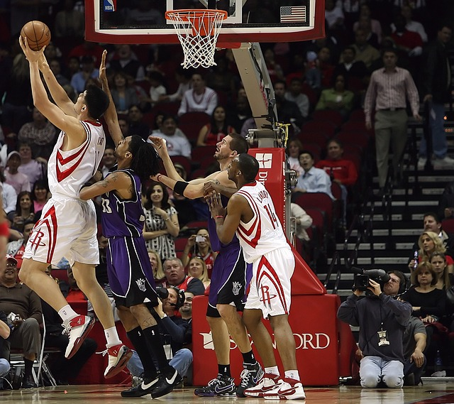

History of Basketball
Basketball was invented by James Naismith in 1891. Originally, it was played with a soccer ball and peach baskets as goals.

Early Development
The first official basketball game was played in 1892, using a soccer ball and peach baskets as goals. The game quickly gained popularity across the United States.
Basketball Goes Pro
In 1946, the Basketball Association of America (BAA) was formed, which later merged with the National Basketball League (NBL) to become the NBA in 1949. Legends like Bill Russell and Wilt Chamberlain helped elevate the game during its early years.
Over the years, the sport evolved into what we know today, with standardized equipment, global competitions, and legendary players like Michael Jordan and LeBron James.
